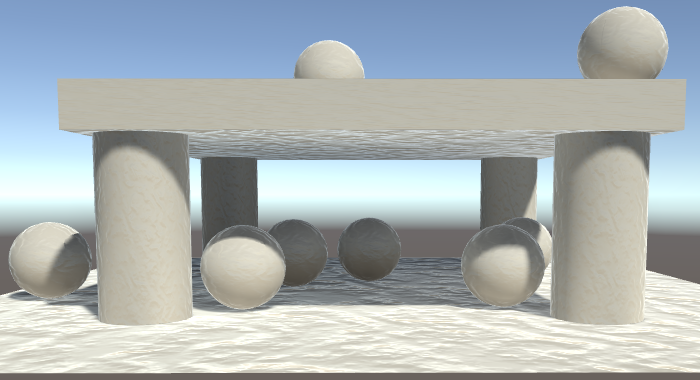
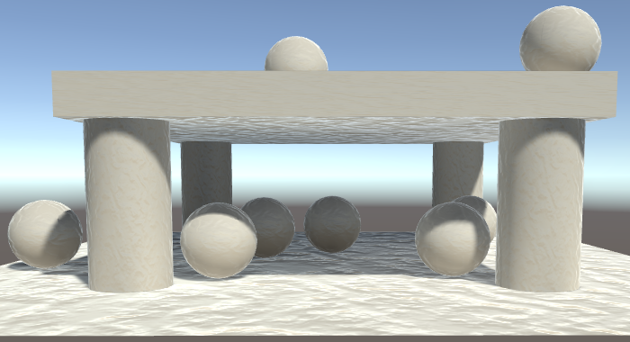

Rendering 16
Static Lighting
- Sample from and render to lightmaps.
- Make baked light work with normal maps.
- Use a light probe group.
This is part 16 of a tutorial series about rendering. Last time, we rendered our own deferred lights. In this part, we'll move on to lightmapping.
This tutorial was made with Unity 5.6.0.
Lightmapping
Performing lighting calculations is expensive. Deferred rendering allows us to use many lights, but shadows are still a limiting factor. If our scene is dynamic, then we cannot avoid performing these calculations. But if both the lights and the geometry are unchanging, then we could calculate the lighting once and reuse it. This allows use to put many lights in our scenes, without having to render them at run time. It also makes it possible to use area lights, which are not available as realtime lights.
How much of the lighting is pre-computed can vary. In this tutorial, we'll go all the way and bake everything into lightmaps. So there won't be any dynamic lighting at all.
To try out lightmapping, I've created a simple test scene that has a simple structure that provides shadow, plus a few spheres placed around and inside it. Everything has the default Unity material.
Baked Lights
To begin lightmapping, change the Mode of the only light object to Baked instead of Realtime.

After turning the main directional light into a baked light, it will no longer be included in dynamic lighting. From the point of view of dynamic objects, the light doesn't exist. The only thing that remains is the environmental lighting, which is still based on the main light.
To actually enable lightmapping, turn on Baked Global Illumination in the Mixed Lighting section of the lighting window. Then set the Lighting Mode to Baked Indirect. Despite the name, this also includes direct lighting. It's just typically used to add indirect light to a scene. Also, make sure that Realtime Global Illumination is disabled, because we're not supporting that yet.
Static Geometry
The objects of the scene are all supposed to be fixed. They should never be moved. To communicate this to Unity, mark them as static. You can do that by enabling the Static toggle at the top right of the inspector window.
There are various subsystems that care about whether things are static or not. Static also has a dropdown menu that you can use to fine-tune which systems treat the object as being static. Right now we only care about lightmapping, but it's simplest to just make everything completely static.
Whether an object is static for lightmapping purposes can also be seen and edited via the inspector of its mesh renderer.
Now that all the objects are static, they will be included in the lightmapping process.
Note that the lightmapped result is less bright than when using realtime lighting. That's because the specular lighting is missing, it's only diffuse lighting. Specular lighting depends on the view angle, so it depends on the camera. Typically, the camera is mobile, so it cannot be included in lightmapping. This limitation means that lightmapping can work for subtle lights and dull surfaces, but not for strong direct lights or shiny surfaces. If you want specular lighting, you'll have to use realtime lights. So you often end up with a mix of baked and realtime lights.
Lightmapping Settings
The lighting window contains a section dedicated to lightmapping settings. Here you can make a trade-off between quality, size, and baking time. You can also switch between the Enlighten lightmapping engine and the Progressive lightmapper. The latter incrementally generates lightmaps, giving priority to what's visible in the scene view, which is convenient while editing. I used Enlighten for this tutorial.

Before you do anything else, set the Directional Mode to Non-Direction. We'll deal with the other mode later.

The baked lighting is stored in textures. You can view them by switching the lighting window from Scene to Global Maps mode. With the default settings, my test scene easily fits in a single 1024×1024 map.
Unity's default objects all have UV coordinates configured for lightmapping. For imported meshes, you either provide your own coordinates, or let Unity generate them for you. After baking, the texture unwraps can been seen in the lightmap. How much space they require depends on the object's size in the scene and the lightmap resolution settings. If they don't fit in a single map, Unity will create additional maps.
Which settings are best varies per project. You have to tweak the settings until you arrive at a good trade-off. Note that the visual quality also greatly depends on the quality of the texture unwrap used for lightmapping. The presence of absence of texture seams can produce obvious artifacts. Unity's default sphere is a good example of this. It is not suited for lightmapping.
Indirect Light
While baking light means that we lose specular lighting, we gain indirect lighting. This is light that bounces off multiple surfaces before it reaches our eyes. Because light bounces around corners, areas that would otherwise be shadowed still get illuminated. We cannot compute this at realtime, but we can include bounced light while baking.
To clearly see the difference between realtime and baked lighting, set the intensity of the environmental lighting to zero. This eliminates the skybox, so all light comes from the directional light only.
Each time that a photon bounces, it loses some of its energy, getting colored by the material it interacted with. Unity takes this into consideration when baking indirect light. As a result, objects get colored based on what's nearby.
Emissive surfaces also affect baked light. They become indirect light sources.
A special setting for indirect light is Ambient Occlusion. This refers to the shadowing of indirect light that happens in corners and creases. It is an artificial boost, which can enhance the feeling of depth.
The ambient occlusion effect is solely based on how hidden a surface is. It doesn't consider where the light is actually coming from. This doesn't always make sense, for example in combination with emissive surfaces.
Transparency
Lightmapping can deal with semitransparent surfaces, up to a point. Light will pass through them, although its color doesn't get filtered by them.
Cutout materials work too.
However, this only works when using closed surfaces. When using single-sided geometry like quads, the light becomes corrupted on the non-existing side. This is fine when there's nothing on the other side, but leads to problems when working with single-sided transparent surfaces.

To deal with this, you have to tell the lightmapping system to treat these surfaces as transparent. This can be done via custom lightmapping settings. You can create these via Asset / Create / Lightmap Parameters. These assets allow you to customize the lightmap calculations per object. In this case, we're only interested in indicating that we're dealing with a transparent object. So enable Is Transparent. Although it is part of the Precomputed Realtime GI section, it will affect all baked lighting.
To use these settings, select them via the object's mesh renderer inspector. Your asset's name will show up in the dropdown list for Lightmap Parameters.
Marking an object as transparent also changes how it contributes to indirect lighting. Transparent objects let indirect light pass, while opaque objects block it.
Using Lightmaps
Now that we know how lightmaps work, we can add support for them to My First Lighting Shader. The first step of this process is to sample the lightmaps. Adjust the spheres in the scene so they use the white material with our shader.
Lightmapped Shader Variants
When a shader is supposed to use lightmaps, Unity will look for a variant associated with the LIGHTMAP_ON keyword. So we have to add a multi-compile directive for this keyword. When using the forward rendering path, lightmaps are sampled in the base pass only.
#pragma multi_compile _ SHADOWS_SCREEN #pragma multi_compile _ VERTEXLIGHT_ON #pragma multi_compile _ LIGHTMAP_ON #pragma multi_compile_fog
When lightmaps are used, Unity will never include vertex lights. Their keywords are mutually exclusive. So we don't need a variant with both VERTEXLIGHT_ON and LIGHTMAP_ON at the same time.
#pragma multi_compile _ SHADOWS_SCREEN// #pragma multi_compile _ VERTEXLIGHT_ON// #pragma multi_compile _ LIGHTMAP_ON#pragma multi_compile _ LIGHTMAP_ON VERTEXLIGHT_ON #pragma multi_compile_fog
Lightmaps are also supported in the deferred rendering path, so add the keyword to the deferred pass as well.
#pragma multi_compile _ UNITY_HDR_ON #pragma multi_compile _ LIGHTMAP_ON
Lightmap Coordinates
The coordinates used to sample the lightmap are stored in the second texture coordinates channel, uv1. So add this channel to VertexData in My Lighting.
struct VertexData {
float4 vertex : POSITION;
float3 normal : NORMAL;
float4 tangent : TANGENT;
float2 uv : TEXCOORD0;
float2 uv1 : TEXCOORD1;
};
The lightmap coordinates have to be interpolated as well. Because they're mutually exclusive with vertex lights, both can use TEXCOORD6.
struct Interpolators {
…
#if defined(VERTEXLIGHT_ON)
float3 vertexLightColor : TEXCOORD6;
#endif
#if defined(LIGHTMAP_ON)
float2 lightmapUV : TEXCOORD6;
#endif
};
The coordinates from the vertex data define the texture unwrap of the mesh for lightmapping. But this doesn't tell us where in the lightmap this unwrap is placed, nor its size. We have to scale and offset the coordinates to arrive at the final lightmap coordinates. This work like the transformation applied to regular texture coordinates, except that the transformation is object-specific, instead of material-specific. The lightmap texture is define in UnityShaderVariables as unity_Lightmap.
Interpolators MyVertexProgram (VertexData v) {
…
i.uv.xy = TRANSFORM_TEX(v.uv, _MainTex);
i.uv.zw = TRANSFORM_TEX(v.uv, _DetailTex);
#if defined(LIGHTMAP_ON)
i.lightmapUV = TRANSFORM_TEX(v.uv1, unity_Lightmap);
#endif
…
}
Unfortunately, we cannot use the convenient TRANSFORM_TEX macro, because it assumes that the lightmap transformation is defined as unity_Lightmap_ST, while it actually is unity_LightmapST. Due to this inconsistency, we have to do it manually.
i.lightmapUV = v.uv1 * unity_LightmapST.xy + unity_LightmapST.zw;
Sampling the Lightmap
Because the lightmap data is considered to be indirect light, we'll sample it in the CreateIndirectLight function. When lightmaps are available, we have to use them as the source for the indirect light, instead of the spherical harmonics.
UnityIndirect CreateIndirectLight (Interpolators i, float3 viewDir) {
…
#if defined(VERTEXLIGHT_ON)
indirectLight.diffuse = i.vertexLightColor;
#endif
#if defined(FORWARD_BASE_PASS) || defined(DEFERRED_PASS)
#if defined(LIGHTMAP_ON)
indirectLight.diffuse = 0;
#else
indirectLight.diffuse += max(0, ShadeSH9(float4(i.normal, 1)));
#endif
float3 reflectionDir = reflect(-viewDir, i.normal);
…
#endif
return indirectLight;
}
The exact form of unity_Lightmap depends on the target platform. It is defined as UNITY_DECLARE_TEX2D(unity_Lightmap). To sample it, we'll use the UNITY_SAMPLE_TEX2D macro instead of tex2D. We'll get to the reason for this later.
indirectLight.diffuse = UNITY_SAMPLE_TEX2D(unity_Lightmap, i.lightmapUV);
We now get baked indirect lighting, but it looks wrong. That's because the lightmap data has been encoded. The colors are either stored in RGBM format or at half intensity, to support high-intensity light. The DecodeLightmap function from UnityCG takes care of decoding this for us.
indirectLight.diffuse = DecodeLightmap( UNITY_SAMPLE_TEX2D(unity_Lightmap, i.lightmapUV) );
Creating Lightmaps
While lightmaps already seem to work with our shader, that's only true for our simple test scene. Currently, the lightmapper always treats our objects as opaque and solid white, even when they're not. We have to make some adjustments to our shader and even add another pass to fully support lightmapping.
From now on, use our own shader for all objects in the scene. The default material should no longer be used.
Semitransprant Shadows
The lightmapper doesn't use the realtime rendering pipeline, so it doesn't use our shader to do its work. This is most obvious when trying to use semitransparent shadows. Make the roof cube semitransparent by giving it a material with its tint's alpha component set to less that 1.
The lightmapper still treats the roof as if it were solid, which is incorrect. It uses the render type of the material to determine how to treat surfaces, which should have told it that our object is semitransparent. In fact, it does know that the roof is semitransparent, it just treats it as if we made it full opaque. This happens because it uses the alpha component of the _Color material property, along with the main texture, to set the opacity. But we don't have that property, we use _Tint instead!
Unfortunately, there is not way to tell the lightmapper which property to use. So to make lightmapping work, we have no other option than to replace our usage of _Tint with _Color. First, update the properties of our shader.
Properties {
// _Tint ("Tint", Color) = (1, 1, 1, 1)
_Color ("Tint", Color) = (1, 1, 1, 1)
…
}
Then, to keep our shader functional, we also have to replace the corresponding variable in My Lighting.
//float4 _Tint;float4 _Color; … float3 GetAlbedo (Interpolators i) { float3 albedo = tex2D(_MainTex, i.uv.xy).rgb * _Color.rgb; … } float GetAlpha (Interpolators i) { float alpha = _Color.a; … }
The same goes for My Shadows.
//float4 _Tint;float4 _Color; … float GetAlpha (Interpolators i) { float alpha = _Color.a; … }
And we also have to adjust MyLightingShaderGUI.
void DoMain () {
GUILayout.Label("Main Maps", EditorStyles.boldLabel);
MaterialProperty mainTex = FindProperty("_MainTex");
editor.TexturePropertySingleLine(
MakeLabel(mainTex, "Albedo (RGB)"), mainTex, FindProperty("_Color")
);
…
}
Cutout Shadows
Cutout shadows have a similar problem. The lightmapper expects the alpha cutoff value to be stored in the _Cutoff property, but we're using _AlphaCutoff. As a result, it uses a default cutoff of 1.
The solution is to again adopt Unity's naming convention. So replace the property.
Properties {
…
// _AlphaCutoff ("Alpha Cutoff", Range(0, 1)) = 0.5
_Cutoff ("Alpha Cutoff", Range(0, 1)) = 0.5
…
}
Adjust My Lighting to match the new name.
//float _AlphaCutoff;float _Cutoff; … FragmentOutput MyFragmentProgram (Interpolators i) { float alpha = GetAlpha(i); #if defined(_RENDERING_CUTOUT) clip(alpha - _Cutoff); #endif … }
Update My Shadows too.
//float _AlphaCutoff;float _Cutoff; … float4 MyShadowFragmentProgram (Interpolators i) : SV_TARGET { float alpha = GetAlpha(i); #if defined(_RENDERING_CUTOUT) clip(alpha - _Cutoff); #endif … }
And MyLightingShaderGUI as well.
void DoAlphaCutoff () {
MaterialProperty slider = FindProperty("_Cutoff");
EditorGUI.indentLevel += 2;
editor.ShaderProperty(slider, MakeLabel(slider));
EditorGUI.indentLevel -= 2;
}
Adding a Meta Pass
The next step is to make sure that the lightmapper uses the correct surface albedo and emission. Right now, everything is always solid white. You can see this by making the floor green. It should result in green indirect light, but it stays white.
To figure out the surface color of objects, the lightmapper looks for a shader pass with its light mode set to Meta. This pass is only used by the lightmapper and isn't included in builds. So let's add such a pass to our shader. It's a basic pass that shouldn't use culling. Put the code for it in a new My Lightmapping include file.
Pass {
Tags {
"LightMode" = "Meta"
}
Cull Off
CGPROGRAM
#pragma vertex MyLightmappingVertexProgram
#pragma fragment MyLightmappingFragmentProgram
#include "My Lightmapping.cginc"
ENDCG
}
Now we need to determine the albedo, specular color, smoothness, and emission. So copy the required variables and functions from My Lighting to My Lightmapping. We only need the vertex position and uv coordinates for this. Normals and tangents are not used, but we will need the lightmap coordinates in the vertex shader.
#if !defined(MY_LIGHTMAPPING_INCLUDED)
#define MY_LIGHTMAPPING_INCLUDED
#include "UnityPBSLighting.cginc"
float4 _Color;
sampler2D _MainTex, _DetailTex, _DetailMask;
float4 _MainTex_ST, _DetailTex_ST;
sampler2D _MetallicMap;
float _Metallic;
float _Smoothness;
sampler2D _EmissionMap;
float3 _Emission;
struct VertexData {
float4 vertex : POSITION;
float2 uv : TEXCOORD0;
float2 uv1 : TEXCOORD1;
};
struct Interpolators {
float4 pos : SV_POSITION;
float4 uv : TEXCOORD0;
};
float GetDetailMask (Interpolators i) {
…
}
float3 GetAlbedo (Interpolators i) {
…
}
float GetMetallic (Interpolators i) {
…
}
float GetSmoothness (Interpolators i) {
…
}
float3 GetEmission (Interpolators i) {
…
}
#endif
We can use the functions as they are, except for GetEmission. That function only does something when it's used in either the forwards base pass or the deferred pass. In My Lightmapping, we can simply remove this restriction.
float3 GetEmission (Interpolators i) {
// #if defined(FORWARD_BASE_PASS) || defined(DEFERRED_PASS)
#if defined(_EMISSION_MAP)
return tex2D(_EmissionMap, i.uv.xy) * _Emission;
#else
return _Emission;
#endif
// #else
// return 0;
// #endif
}
These functions will only work when the appropriate keywords are defined, so add shader features for them to the pass.
#pragma vertex MyLightmappingVertexProgram #pragma fragment MyLightmappingFragmentProgram #pragma shader_feature _METALLIC_MAP #pragma shader_feature _ _SMOOTHNESS_ALBEDO _SMOOTHNESS_METALLIC #pragma shader_feature _EMISSION_MAP #pragma shader_feature _DETAIL_MASK #pragma shader_feature _DETAIL_ALBEDO_MAP #include "My Lightmapping.cginc"
Vertex Program
The vertex program is simple for this pass. Convert the position and transform the texture coordinates.
Interpolators MyLightmappingVertexProgram (VertexData v) {
Interpolators i;
i.pos = UnityObjectToClipPos(v.vertex);
i.uv.xy = TRANSFORM_TEX(v.uv, _MainTex);
i.uv.zw = TRANSFORM_TEX(v.uv, _DetailTex);
return i;
}
However, we're not actually rendering for a camera, we're rendering for the lightmapper. We're associating colors with an object's texture unwrap in the lightmap. To perform this mapping, we have to use the lightmap coordinates instead of the vertex position, with the appropriate transformation.
Interpolators i;
v.vertex.xy = v.uv1 * unity_LightmapST.xy + unity_LightmapST.zw;
v.vertex.z = 0;
i.pos = UnityObjectToClipPos(v.vertex);
It turns out that to make this work on all machines, the Z coordinate of the vertex position has to be used somehow, even though we don't use it. Unity's shaders use a dummy value for this, so we'll simply do the same.
Interpolators i;
v.vertex.xy = v.uv1 * unity_LightmapST.xy + unity_LightmapST.zw;
v.vertex.z = v.vertex.z > 0 ? 0.0001 : 0;
i.pos = UnityObjectToClipPos(v.vertex);
Fragment Program
In the fragment program, we'll have to output both the albedo and emissive colors. The lightmapper will do this by performing the pass twice, once for each output. To make this easy for us, we can use the UnityMetaFragment function defined in the UnityMetaPass include file. It has a UnityMetaInput structure as parameter which contains both the albedo and emission. The function will decide which one to output and how to encode it.
UnityMetaInput also contains the specular color, even though it isn't stored in the lightmap. It's used for some editor visualizations, which we'll ignore at this point.
#include "UnityPBSLighting.cginc"
#include "UnityMetaPass.cginc"
…
float4 MyLightmappingFragmentProgram (Interpolators i) : SV_TARGET {
UnityMetaInput surfaceData;
surfaceData.Emission = 0;
surfaceData.Albedo = 0;
surfaceData.SpecularColor = 0;
return UnityMetaFragment(surfaceData);
}
To get the emissive color, we can simple use GetEmission. To get the albedo, we have to use DiffuseAndSpecularFromMetallic again. That function has output parameters for the specular color and reflectivity, so we have to provide those even though we don't use them outside the function. We can use surfaceData.SpecularColor to catch the specular color.
float4 MyLightmappingFragmentProgram (Interpolators i) : SV_TARGET {
UnityMetaInput surfaceData;
surfaceData.Emission = GetEmission(i);
float oneMinusReflectivity;
surfaceData.Albedo = DiffuseAndSpecularFromMetallic(
GetAlbedo(i), GetMetallic(i),
surfaceData.SpecularColor, oneMinusReflectivity
);
// surfaceData.SpecularColor = 0;
return UnityMetaFragment(surfaceData);
}
This works for indirect light, but emissive light might not yet appear in the light map. That's because the lightmapper doesn't always include a pass for the emissive light. Materials have to signal that they have emissive light to contribute to the baking process. This is done via the Material.globalIlluminationFlags property. For now, let's always indicate that the emissive light should be baked, when its emission is edited.
void DoEmission () {
…
if (EditorGUI.EndChangeCheck()) {
if (tex != map.textureValue) {
SetKeyword("_EMISSION_MAP", map.textureValue);
}
foreach (Material m in editor.targets) {
m.globalIlluminationFlags =
MaterialGlobalIlluminationFlags.BakedEmissive;
}
}
}
Rough Metals
Our shader now appears to work correctly, but it doesn't exactly match the results of the standard shader. This is most obvious when using a colored metal with very low smoothness.
The idea is that very rough metals should produce more indirect light than our current calculations suggest. The standard shader compensates for this by adding part of the specular color to the albedo. It uses the SmoothnessToRoughness function from UnityStandardBRDF to determine a roughness value based on smoothness, halves it, and uses that to scale the specular color.
float roughness = SmoothnessToRoughness(GetSmoothness(i)) * 0.5; surfaceData.Albedo += surfaceData.SpecularColor * roughness; return UnityMetaFragment(surfaceData);
Directional Lightmaps
The lightmapper only uses the vertex data of geometry, it doesn't take normal maps into account. The lightmap resolution is too low to capture the details provided by typical normal maps. This means that the static lighting will be flat. This becomes very obvious when using a material with a normal map.
 

When switching from realtime to baked lighting, the influence of the normal maps almost completely disappear. You only see them because they're still used for environmental reflections.
Directionality
It is possible to make normal maps work with baked lighting, by changing the Directional Mode back to Directional.
When using directional lightmaps, Unity will create two maps instead of just one. The first map contains the lighting information as usual, known as the intensity map. The second map is known as the directionality map. It contains the direction that most of the baked light is coming from.
When the directionality map is available, we can use it to perform simple diffuse shading with the baked light. This makes it possible to apply normal maps. Note that only a single light direction is known, so the shading will be an approximation. As long as there is at least a fairly dominant light direction when the lighting is strong, the results will appear fine.
Sampling the Direction
When directional lightmaps are available, Unity will look for a shader variant with both the LIGHTMAP_ON and DIRLIGHTMAP_COMBINED keywords. Instead of adding multi-compile directives for that manually, we can use #pragma multi_compile_fwdbase in the forward base pass. It will take care of all the lightmapping keywords, and also the VERTEXLIGHT_ON keyword.
// #pragma multi_compile _ SHADOWS_SCREEN// #pragma multi_compile _ LIGHTMAP_ON VERTEXLIGHT_ON#pragma multi_compile_fwdbase #pragma multi_compile_fog
We can do the same for the deferred pass, but here we have to use the #pragma multi_compile_prepassfinal directive. It takes care of the lightmapping and the HDR keywords.
// #pragma multi_compile _ UNITY_HDR_ON// #pragma multi_compile _ LIGHTMAP_ON#pragma multi_compile_prepassfinal
The baked light direction is needed directly after retrieving the baked light itself, in CreateIndirectLight. The directionality map is made available via unity_LightmapInd.
#if defined(LIGHTMAP_ON) indirectLight.diffuse = DecodeLightmap(UNITY_SAMPLE_TEX2D(unity_Lightmap, i.lightmapUV)); #if defined(DIRLIGHTMAP_COMBINED) float4 lightmapDirection = UNITY_SAMPLE_TEX2D( unity_LightmapInd, i.lightmapUV ); #endif #else indirectLight.diffuse += max(0, ShadeSH9(float4(i.normal, 1))); #endif
However, this will result in a compile error. That's because a texture variable actually consists of two parts. There's the texture resource, and there's the sampler state. The sampler state determines how the texture is sampled, which includes the filter and clamp mode. Usually, both parts are defined per texture, but this is not required on all platforms. It can also be possible to separate them, which allows us to define a single sampler state for multiple textures.
Because the intensity and the directionality maps are always sampled in the same way, Unity uses a single sampler state for them, when possible. That's why we had to use the UNITY_SAMPLE_TEX2D macro when sampling the intensity map. The directionality map has been defined without a sampler. To sample it, we have to use the UNITY_SAMPLE_TEX2D_SAMPLER macro to explicitly tell it which sampler to use.
float4 lightmapDirection = UNITY_SAMPLE_TEX2D_SAMPLER( unity_LightmapInd, unity_Lightmap, i.lightmapUV );
Using the Direction
To use the direction, we first have to decode it. Then we can perform the dot product with the normal vector to find the diffuse factor and apply it to the color. But the directionality map doesn't actually contain a unit-length direction, it is a bit more involved than that. Fortunately, we can use the DecodeDirectionalLightmap function from UnityCG to both decode the directionality data and perform the shading for us.
float4 lightmapDirection = UNITY_SAMPLE_TEX2D_SAMPLER( unity_LightmapInd, unity_Lightmap, i.lightmapUV ); indirectLight.diffuse = DecodeDirectionalLightmap( indirectLight.diffuse, lightmapDirection, i.normal );
Light Probes
Lightmaps only work for static objects, not dynamic ones. As a result, dynamic objects do not fit into a scene with baked lighting. This is extremely obvious when there are no realtime lights at all.
Creating a Light Probe Group
Add a group of light probes to the scene via GameObject / Light / Light Probe Group. This will create a new game object with eight probes in a cube formation. They will immediately be used when shading dynamic objects.
Via its inspector, you can edit the light probe group, after enabling the Edit Light Probes mode. When enabled, you can select individual probes and either move them in the scene view, or adjust them via the inspector. You can manipulate, duplicate, and delete individual probes as if they were game objects.
You do not have to explicitly enable the edit mode. Selecing the group in the scene view is enough to start editing the probes. To stop editing them, deselect the group.
Placing Light Probes
The light probe group divides the volume it encloses into tetrahedral regions. Four probes define the corners of a tetrahedron. These probes are interpolated to determine the final spherical harmonics that are used for a dynamic object, depending on its position inside the tetrahedron. This means that dynamic objects are treated as a single point, so it only works well for fairly small objects.
The tetrahedrons are generated automatically while you edit the probes. You don't need to know their configuration, but their visualization can help you see the relative position of probes.
Placing light probes is a matter of tweaking them until you get acceptable results, just like fiddling with lightmap settings. Begin by encasing the area that will contain dynamic objects.
Then add more probes depending on how the lighting conditions change. It is essential that you do not place them inside static geometry. Also don't put them on the wrong side of single-sided geometry that isn't transparent.
Keep adding and moving probes until you have reasonable lighting conditions in all areas and the transitions between them are acceptable.
You can test the probes by moving dynamic objects around. When a dynamic object is selected, the probes that are currently affecting it will be shown as well. The probes will show their lighting, instead of just being yellow spheres. You can also see the interpolated data used for the dynamic object.
The next tutorial is Mixed Lighting.